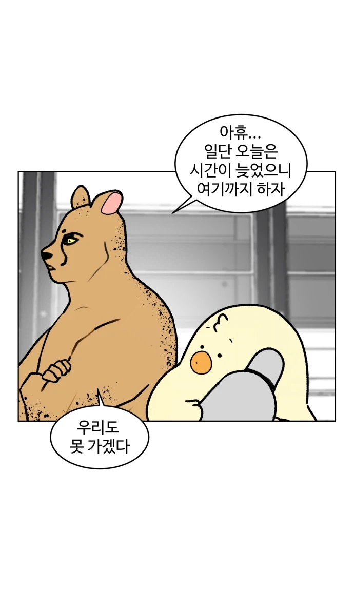
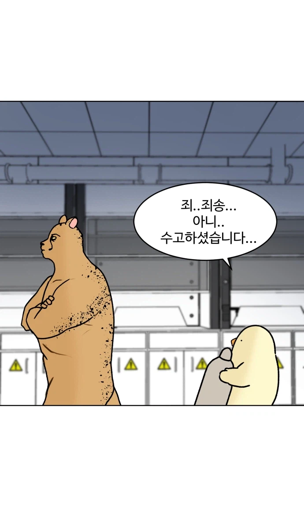
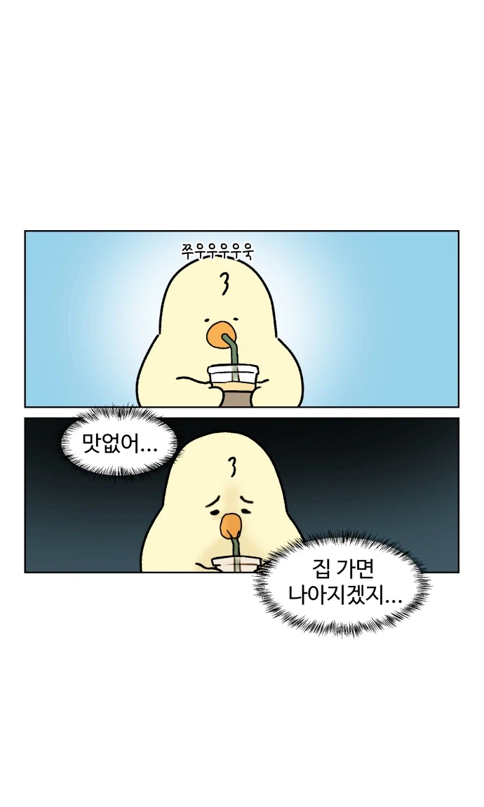
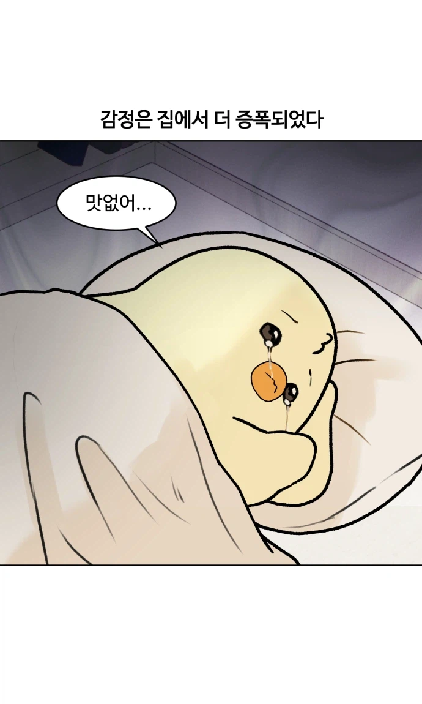
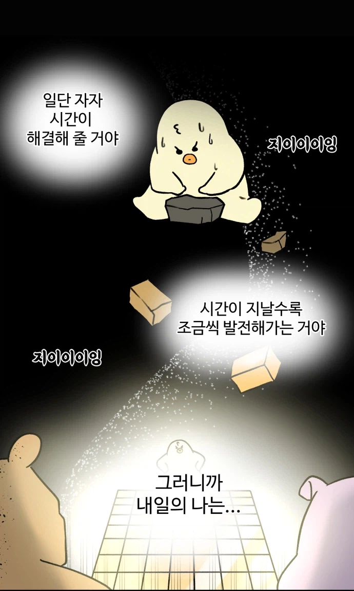
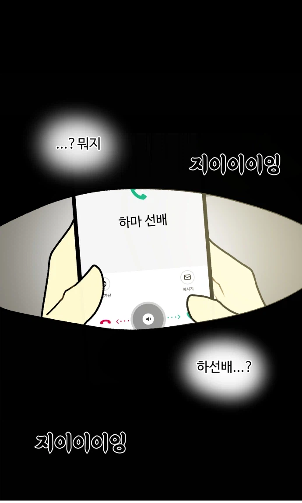
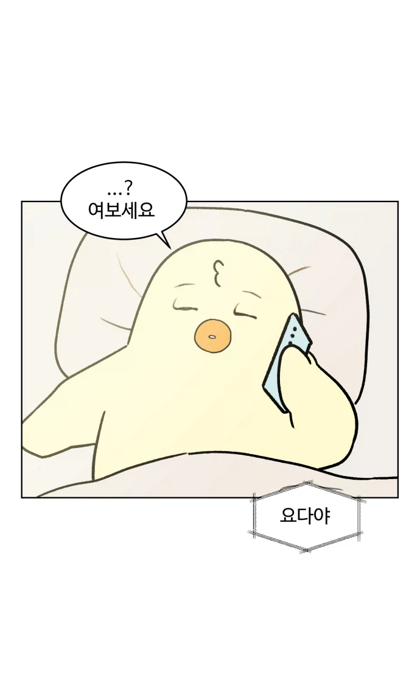
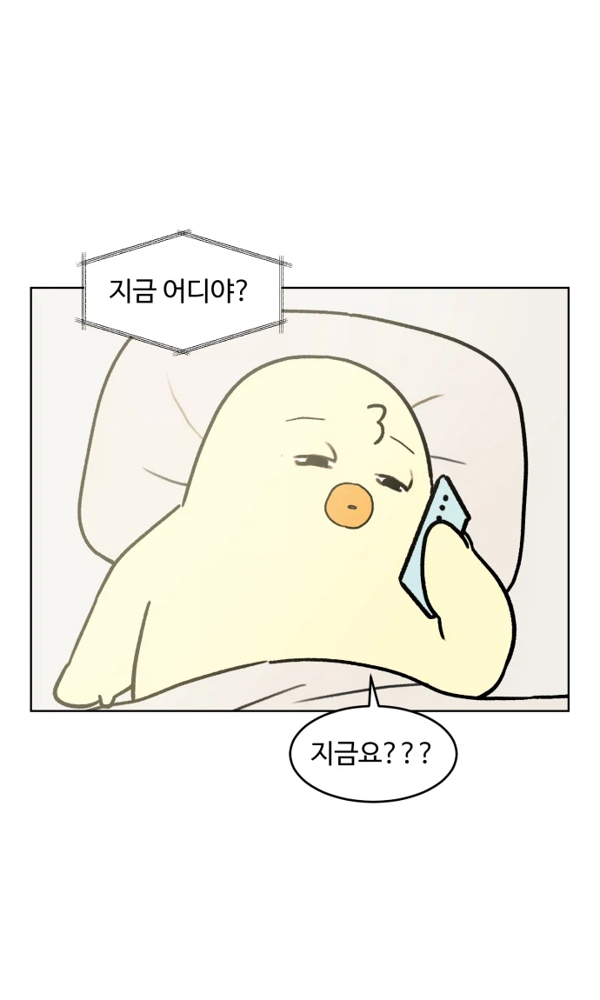
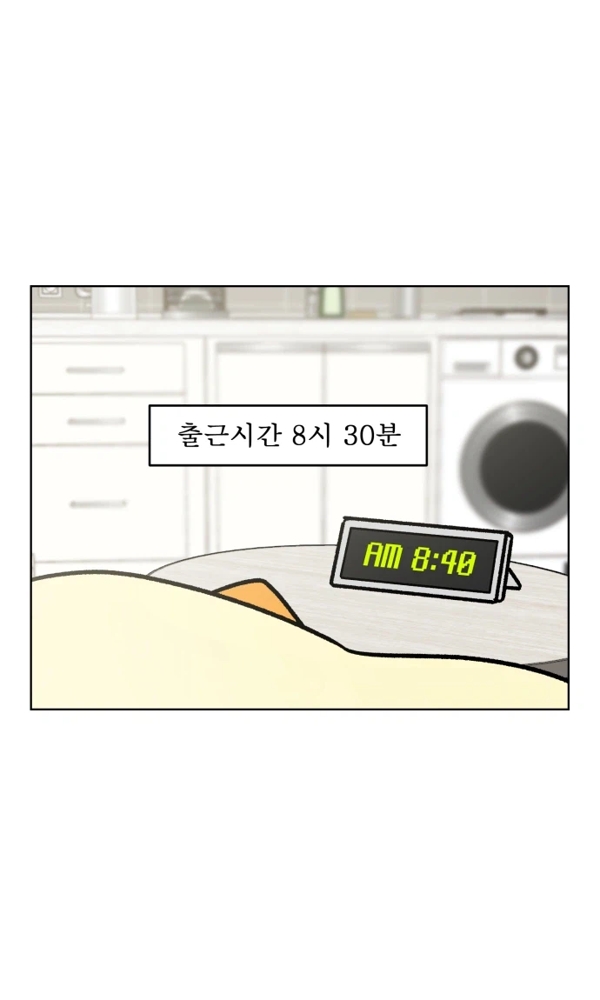

외않되?
아...ptsd온다.. 왜 내 손발이 차가워지는거냐....
그냥 가서 죄송하다는 표정으로 죄송하다고 여러번하면 됨
폐급쉨ㅋㅋ
어.. 음... 처음엔 실수할 수 있찌~
시발 아찔하다 진짜 ㅋㅋㅋ
근태 ㅋㅋㅋㅋㅋㅋㅋㅋㅋㅋ
나도 이번 화 보면서
뭐지? 자기가 폐급인 걸 인정하는 만화를 그리고 있다는 게 맞는 건가??? 하면서 ????? 이 만화의 정체성이 뭐지 하고 머리가 어리둥절했음
그 어떤 공포만화보다 존나 무섭다
…. 저 그만 두겠습니다
지각.. 쉴드가 안 되는 개폐급임
씹 ㄷㄷ
나 분명 회사인데 사실 꿈 이었다라는 반전을 겪어봤슴
신입 때 늦잠 잔건 이해가 안되네